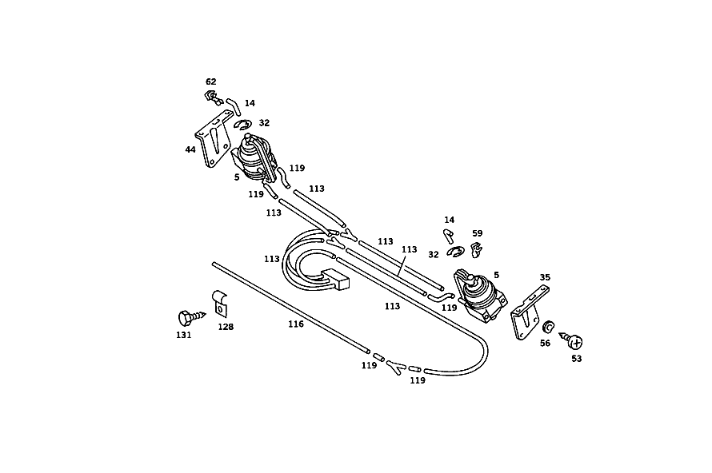

| № | Артикул | Название | Кол. | Примечание | Ограничение |
|---|---|---|---|---|---|
| 5 | A 000 800 08 75 | ЭЛЕМЕНТ | - | ||
| 5 | A 000 800 11 75 | Исполнительный элемент (ACTUATOR) | 2 | [811] UP TO END OF MODEL YEAR '81 | |
| 8 | A 000 800 22 75 | Исполнительный элемент (ACTUATOR) | 2 | [811] UP TO END OF MODEL YEAR '81 | |
| 11 | A 107 800 36 75 | Исполнительный элемент (ACTUATOR) | 4 | VENTILATION FLAP,FRONT LEFT AND RIGHT [820] FROM MODEL YEAR '82 | |
| 14 | A 107 805 08 74 | ТЯГА | 2 | TO VACUUM ELEMENT [811] UP TO END OF MODEL YEAR '81 | |
| 17 | A 107 805 10 74 | ТЯГА | 2 | [402] БОЛЬШЕ НЕ ПОСТАВЛЯЕТСЯ [811] UP TO END OF MODEL YEAR '81 | |
| 20 | A 107 805 10 74 | ТЯГА | 4 | TO VACUUM ELEMENT [402] БОЛЬШЕ НЕ ПОСТАВЛЯЕТСЯ [820] FROM MODEL YEAR '82 | |
| 23 | A 107 805 06 74 | Тяга переключения передач (SHIFT ROD) | 1 | [402] БОЛЬШЕ НЕ ПОСТАВЛЯЕТСЯ [029] FROM CHASSIS: 024 022843 044 048903 | |
| 26 | N 007338 004205 | Заклепка (RIVET) | 2 | [029] FROM CHASSIS: 024 022843 044 048903 | |
| 29 | A 170 805 00 71 | БОЛТ | 2 | [811] UP TO END OF MODEL YEAR '81 | |
| 29 | A 107 805 01 71 | БОЛТ | - | ||
| 29 | A 170 805 00 71 | БОЛТ | 4 | [820] FROM MODEL YEAR '82 | |
| 32 | N 006799 003202 | Стопорная шайба (RETAINING WASHER) | 2 | ||
| 35 | A 107 805 00 14 | Держатель (HOLDER) | 1 | СЛЕВА | |
| 38 | A 107 805 11 14 | ДЕРЖАТЕЛЬ | 2 | [811] UP TO END OF MODEL YEAR '81 | |
| 41 | A 107 805 15 14 | ДЕРЖАТЕЛЬ | 1 | СЛЕВА [820] FROM MODEL YEAR '82 | |
| 41 | A 107 805 16 14 | ДЕРЖАТЕЛЬ | 1 | СПРАВА [402] БОЛЬШЕ НЕ ПОСТАВЛЯЕТСЯ [820] FROM MODEL YEAR '82 | |
| 41 | A 107 805 16 14 | ДЕРЖАТЕЛЬ | 1 | [402] БОЛЬШЕ НЕ ПОСТАВЛЯЕТСЯ [811] UP TO END OF MODEL YEAR '81 | |
| 44 | A 107 805 02 14 | Держатель (HOLDER) | 1 | СПРАВА | |
| 47 | A 116 987 05 41 | Эластомерная шайба (ELASTOMER WASHER) | 6 | [811] UP TO END OF MODEL YEAR '81 | |
| 50 | N 912010 004002 | Стопорная шайба | 6 | [811] UP TO END OF MODEL YEAR '81 | |
| 53 | N 007981 005209 | Шуруп | 4 | B5,5X16 [811] UP TO END OF MODEL YEAR '81 | |
| 56 | N 000137 006204 | Пружинная шайба (SPRING WASHER) | 4 | [811] UP TO END OF MODEL YEAR '81 | |
| 59 | N 918002 004000 | Пружинный зажим (CLAMPING SPRING) | 1 | ||
| 62 | N 918002 004001 | Пружинный зажим (CLAMPING SPRING) | 1 | ||
| 65 | A 003 988 50 78 | Скоба (CLAMP) | 2 | VACUUM ELEMENT с BRACKET TO INSIDE CENTRAL PART FLAP | |
| 65 | A 003 988 50 78 | Скоба (CLAMP) | 2 | [820] FROM MODEL YEAR '82 | |
| 68 | A 107 800 10 83 | ПРОВОД | 1 | ВАКУУМ [811] UP TO END OF MODEL YEAR '81 | |
| 71 | A 116 800 03 78 | - Обратный клапан (CHECK VALVE) | 3 | [811] UP TO END OF MODEL YEAR '81 | |
| 74 | A 117 078 01 45 | - Штуцер ответвления (BRANCH FITTING) | 7 | Y\-ОБРАЗН. ФОРМА [811] UP TO END OF MODEL YEAR '81 | |
| 74 | A 117 078 01 45 | Штуцер ответвления (BRANCH FITTING) | 1 | [029] FROM CHASSIS: 024 022843 044 048903 | |
| 74 | A 117 078 01 45 | Штуцер ответвления (BRANCH FITTING) | 2 | [820] FROM MODEL YEAR '82 | |
| 74 | A 117 078 01 45 | Штуцер ответвления (BRANCH FITTING) | 1 | [820] FROM MODEL YEAR '82 | |
| 74 | A 117 078 01 45 | Штуцер ответвления (BRANCH FITTING) | 1 | [820] FROM MODEL YEAR '82 | |
| 74 | A 117 078 01 45 | Штуцер ответвления (BRANCH FITTING) | 4 | ||
| 77 | A 117 078 00 45 | - Штуцер ответвления (BRANCH FITTING) | 5 | ТРОЙНИК | |
| 77 | A 117 078 00 45 | Штуцер ответвления (BRANCH FITTING) | 1 | [820] FROM MODEL YEAR '82 | |
| 77 | A 117 078 00 45 | - Штуцер ответвления (BRANCH FITTING) | 1 | [820] FROM MODEL YEAR '82 | |
| 80 | A 126 805 05 22 | Распределитель | 2 | [820] FROM MODEL YEAR '82 | |
| 80 | A 126 805 05 22 | Распределитель | 1 | [820] FROM MODEL YEAR '82 | |
| 80 | A 126 805 05 22 | Распределитель | 2 | [820] FROM MODEL YEAR '82 | |
| 83 | A 123 800 00 78 | Клапан (VALVE) | 1 | [820] FROM MODEL YEAR '82 | |
| 83 | A 123 800 00 78 | Клапан (VALVE) | 1 | [820] FROM MODEL YEAR '82 | |
| 86 | A 117 078 05 81 | Шланг (HOSE) | 1 | [811] UP TO END OF MODEL YEAR '81 | |
| 89 | A 000 987 11 45 | Защитный колпачок (PROTECTIVE CAP) | 1 | [811] UP TO END OF MODEL YEAR '81 | |
| 92 | A 116 988 25 78 | СКОБА | 1 | [402] БОЛЬШЕ НЕ ПОСТАВЛЯЕТСЯ [811] UP TO END OF MODEL YEAR '81 | |
| 95 | N 007976 004215 | Шуруп | 2 | 4.8X16 [811] UP TO END OF MODEL YEAR '81 | |
| 98 | N 007981 004254 | Шуруп | 1 | 4.2X19 [811] UP TO END OF MODEL YEAR '81 | |
| 101 | N 009021 004108 | Шайба | - | ||
| 101 | A 094 990 63 08 | Шайба (WINDOW) | 1 | [811] UP TO END OF MODEL YEAR '81 | |
| 104 | N 916002 008100 | Хомут (CLAMP) | 1 | ||
| 107 | A 107 806 04 03 | ПРОВОД | 1 | FROM ELEMENT для WATER FAUCET TO DISTRIBUTOR [402] БОЛЬШЕ НЕ ПОСТАВЛЯЕТСЯ [811] UP TO END OF MODEL YEAR '81 | |
| 110 | A 107 806 08 01 | ПРОВОД | 1 | [402] БОЛЬШЕ НЕ ПОСТАВЛЯЕТСЯ [811] UP TO END OF MODEL YEAR '81 | |
| 110 | A 107 806 08 01 | ПРОВОД | 1 | [402] БОЛЬШЕ НЕ ПОСТАВЛЯЕТСЯ | |
| 113 | A 000 158 14 35 | Трубопровод (PIPING) | 1 | FROM DISTRIBUTOR IN ENGINE COMPARTMENT TO OPERATING UNIT 1250 MM; 4X1mm [404] ЗАКАЗЫВАТЬ ПОГОННЫМИ МЕТРАМИ | |
| 113 | A 000 158 14 35 | Трубопровод (PIPING) | 1 | FROM LEFT OPERATING UNIT VACUUM SWITCH TO WATER FAUCET VACUUM ELEMENT 17000 MM; 4X1mm [404] ЗАКАЗЫВАТЬ ПОГОННЫМИ МЕТРАМИ | |
| 113 | A 000 158 14 35 | Трубопровод (PIPING) | 1 | FROM RIGHT VACUUM SWITCH AT OPERATING UNIT TO LEFT VACUUM SWITCH 150mm; 4X1mm [404] ЗАКАЗЫВАТЬ ПОГОННЫМИ МЕТРАМИ | |
| 113 | A 000 158 14 35 | Трубопровод (PIPING) | 1 | 190 MM; 4X1mm [404] ЗАКАЗЫВАТЬ ПОГОННЫМИ МЕТРАМИ | |
| 113 | A 000 158 14 35 | Трубопровод (PIPING) | 1 | FROM LEFT MAIN AIR FLAP TO RIGHT MAIN AIR FLAP 650 MM; 4X1mm [404] ЗАКАЗЫВАТЬ ПОГОННЫМИ МЕТРАМИ | |
| 113 | A 000 158 14 35 | Трубопровод (PIPING) | 1 | 700 MM; 4X1mm [404] ЗАКАЗЫВАТЬ ПОГОННЫМИ МЕТРАМИ [820] FROM MODEL YEAR '82 | |
| 113 | A 000 158 14 35 | Трубопровод (PIPING) | 1 | 800 MM; 4X1mm [404] ЗАКАЗЫВАТЬ ПОГОННЫМИ МЕТРАМИ [820] FROM MODEL YEAR '82 | |
| 116 | A 005 997 59 82 | ТРУБОПРОВОД | 1 | 500mm [404] ЗАКАЗЫВАТЬ ПОГОННЫМИ МЕТРАМИ | |
| 116 | A 005 997 59 82 | ТРУБОПРОВОД | 1 | НА РЕГУЛИР.КЛАПАНЕ 50mm [404] ЗАКАЗЫВАТЬ ПОГОННЫМИ МЕТРАМИ | |
| 119 | A 007 997 61 82 | Шланг (HOSE) | NB | 50mm; 9X2.75 MM [404] ЗАКАЗЫВАТЬ ПОГОННЫМИ МЕТРАМИ | |
| 119 | A 007 997 61 82 | Шланг (HOSE) | NB | К РАСПРЕДЕЛИТЕЛЮ 30mm; 9X2.75 MM [404] ЗАКАЗЫВАТЬ ПОГОННЫМИ МЕТРАМИ | |
| 122 | A 117 078 00 45 | Штуцер ответвления (BRANCH FITTING) | 1 | LEFT MAIN AIR FLAP VACUUM ELEMENT | |
| 125 | A 117 078 01 45 | Штуцер ответвления (BRANCH FITTING) | 1 | RIGHT MAIN AIR FLAP VACUUM ELEMENT | |
| 128 | N 072571 002015 | Хомут (CLAMP) | 1 | ||
| 131 | N 007976 004205 | Шуруп | 1 | ||
| 134 | A 000 800 01 78 | КЛАПАН | - | ||
| 134 | A 000 800 04 78 | Переключающий клапан (SWITCHOVER VALVE) | 4 | ПЕРЕКЛЮЧ. КЛАПАН [820] FROM MODEL YEAR '82 | |
| 137 | N 007981 003337 | Шуруп | - | ||
| 137 | N 007981 003214 | Шуруп (TAPPING SCREW) | 4 | B3,9X9,5 [820] FROM MODEL YEAR '82 | |
| 140 | A 126 805 03 22 | Распределитель (DISTRIBUTOR) | 1 | [820] FROM MODEL YEAR '82 | |
| 143 | A 126 805 05 22 | Распределитель | 2 | [820] FROM MODEL YEAR '82 | |
| 146 | A 126 997 23 81 | втулка (GROMMET) | 2 | ПЕРЕКЛЮЧ. КЛАПАН [820] FROM MODEL YEAR '82 | |
| 149 | A 126 805 00 75 | ДРОССЕЛЬ | - | ||
| 149 | A 126 805 01 75 | ДРОССЕЛЬ | - | ||
| 149 | A 201 805 00 75 | Дроссель (THROTTLE INSERT) | 1 | ПЕРЕКЛЮЧ. КЛАПАН [820] FROM MODEL YEAR '82 | |
| 152 | A 002 997 22 90 | связующее вещество | 7 | [811] UP TO END OF MODEL YEAR '81 | |
| 152 | A 001 997 94 90 | Кабельная стяжка (CABLE TIE) | - | 2,5X100 MM | |
| 152 | A 001 997 83 90 | Кабельная стяжка | 2 | 4.6X279 MM [811] UP TO END OF MODEL YEAR '81 | |
| 152 | A 001 997 41 90 | Кабельная стяжка (CABLE STRAP) | 1 | 7X100 MM [811] UP TO END OF MODEL YEAR '81 | |
| 152 | A 116 997 08 90 | Кабельная стяжка | 1 | 7X140 MM [811] UP TO END OF MODEL YEAR '81 |
Позиций: 84 · подписано на схемах: 84 · колесо — плавный зум в курсор, перетаскивание — пан, двойной клик — зум, клик по артикулу — скопировать · наведите на строку или цифру на схеме — подсветка связки, клик — закрепить.